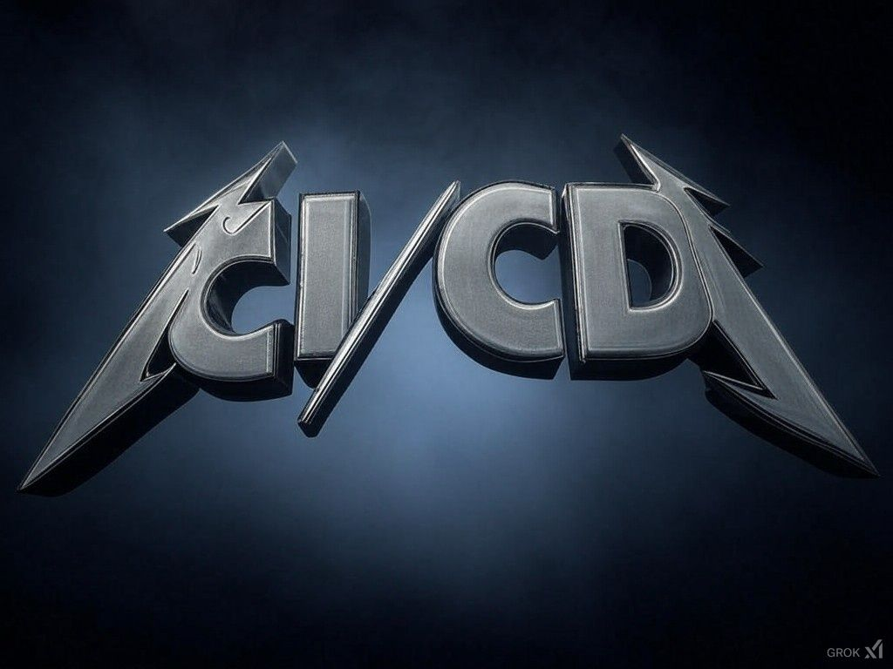

CI got stuck, so I wrote a song with Suno AI while waiting for DevOps to fix it. Priorities. 😂
Originally published on LinkedIn
CI got stuck, so I wrote a song with Suno AI while waiting for DevOps to fix it. Priorities. 😂
Oh yeah, and it's on Spotify: 🎸
https://lnkd.in/dyMDFVpS
